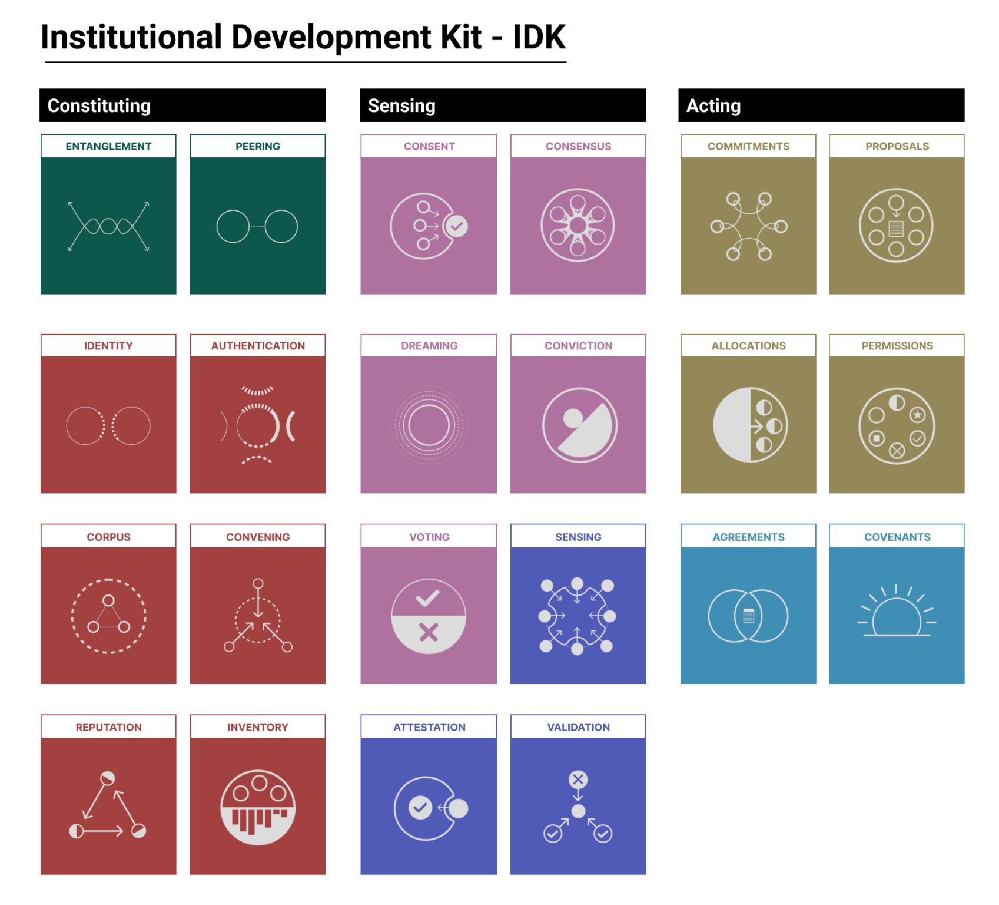

The Institutional Development Kit (IDK) is a live-action facilitation framework to develop regenerative protocols and institutions in context.
It integrates emerging modular governance logics from civic innovation, digital governance, and deliberative democracy into tools for creating programmable institutions that humans, non-humans, and tech for planetary resilience.
The IDK treats institutions as composable systems rather than fixed entities. It offers a working set of protocols, prompts, and components — spanning identity, consent, coordination, data, and resource flows — that can be assembled, tested, and adapted to local conditions.
At its core, the IDK moves between domains often held apart: the ritual practices that have long sustained communities, and the emerging protocols shaping sovereignty and resilience in digital systems. It approaches these not as different things, but as parallel expressions of coordination — each encoding memory, obligation, and relation in distinct forms. It is meant to be used in the open: take it for a spin, fork it, let it get dirty.